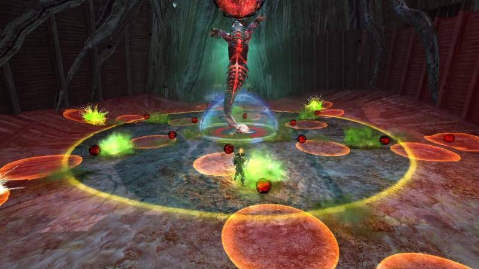
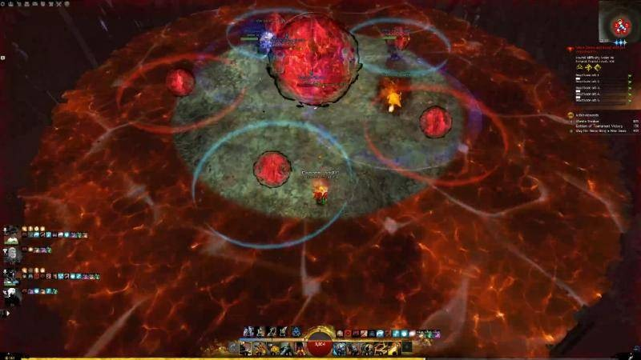
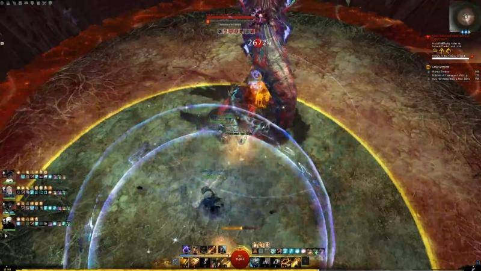
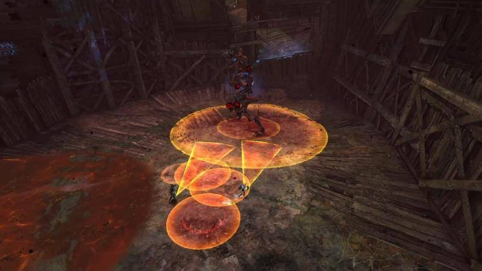
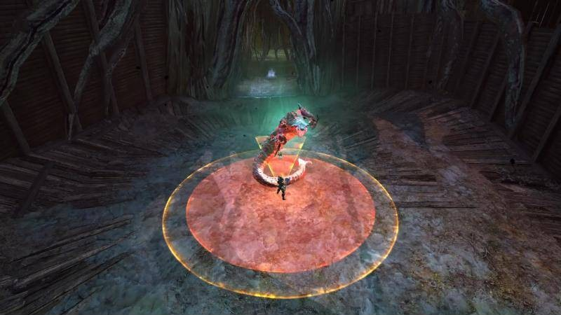
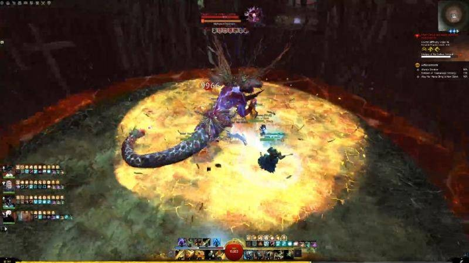

M.A.M.A.: erste Bar vor Ende der Animation brechen, sonst Knockback + 7× Burning (ohne Aegis). Siax: Vile Spit macht 100 % deiner HP – Barrier rettet dich. Ensolyss: nach jeder Bullet-Hell – hier rettet Barrier nicht.
2
M.A.M.A.: Adds & rote Pfütze
Alle 25 % Champion-Clockwork töten (2 große CC-AoEs → Stabi + Aegis). Bei ~33 % rote Gift-Pfütze: sofort raus, nicht tanken.
3
Siax: Halluzinationen
Am Ende der wachsenden AoE Aegis oder Ausweichen, sonst spawnt eine Elite-Halluzination. Einer bleibt beim Tail-Swipe vor Siax (mit Aegis) → kein Toxic Blast.
4
Siax 66 % / 33 %: Veteranen
4 Veteranen N/O/S/W – vorher per Minimap aufteilen (Supports zusammen, DPS je einen). Bei 33 % verschieben sich die Spawns im Uhrzeigersinn.
5
Ensolyss: Gift-Rand & Charge
Rand ist von Anfang an Gift. Seitlich/hinten stehen (Frontal-Cleave). Charge: ausweichen, nicht ins Gift knocken lassen; alle Mitte stacken, dann porte er zurück.
6
Ensolyss: Bullet-Hell (66/33 %) & letzte 15 %
5 Punkte capturen – stirbt jemand, wird er belebt, sobald einer fertig macht. Ab 15 %: alle in den Schild in der Mitte, Mobs dashen rein → Stabi. Genug DPS von 33 → 15 % überspringt die Phase.
② M.A.M.A.: AoEs ausweichen

① Siax Vile Spit – Breakbar!

⑥ Ensolyss Bullet-Hell

① Ensolyss: in den Schild
Details zum Nachschlagen
Start
CM über die Challenge Mote (alle Nightmare-Erfolge nötig). Krait unter der Mote nicht wie im NM töten – sonst kein CM.
Viele Gruppen überspringen die erste Mob-Gruppe per Sprung übers Kraftfeld (Achtung: vertikales Holzstück am Rampenende umgehen).
Nach den 3 Champion-Clockworks vor M.A.M.A. üblich: /gg und Boons am Singularity neu stacken.
M.A.M.A.

Cannon Barrage – orange AoEs
Spawnt ohne Vulnerability, mit Breakbar, die sie mehrfach regeneriert. Erste Bar vor dem großen Knockback brechen (sonst 7 Burning ohne Aegis).
Alle 25 % invulnerabel + Champion-Clockwork: zwei große CC-AoEs (Jump-Slam, Drag-in + Wirbel) → Stabi und Aegis sehr wertvoll.
~33 %: große rote Gift-Pfütze – viel stärker als im NM, sofort raus.
Weitere Angriffe: Cannon Barrage (orange AoEs), Slam im Uhrzeigersinn (startet gegenüber ihrer Blickrichtung), Jump Strike auf Spieler mit Pushback-Wellen, rote/grüne Orb-Reihen auf Fernkampf-Spieler.
Siax the Corrupted

Halluzinations-AoE: Aegis oder ausweichen
Vor Siax: Kapturpunkte; Projektile am Mittelpunkt verschwinden, wenn die Seitenpunkte erledigt sind. Nach Spawn üblich: /gg + Boons stacken.
Start: Breakbar gegen Vile Spit (Orbs in 4 Richtungen, 100 % HP-Schaden – Barrier verhindert Down).
Halluzinations-AoE: Aegis/Ausweichen am Ende, sonst Elite-Halluzination; Vomit Toxin trifft den entferntesten Spieler.
Tail-Swipe: einer bleibt vorne (Aegis) → kein Toxic Blast mit 3 Giftfeldern.
66 % und 33 %: 4 Veteranen N/O/S/W, bei 33 % im Uhrzeigersinn verschoben.
Ensolyss of the Endless Torment

Upswing: Slam + Halluzinations-AoEs
Rand von Beginn an vergiftet. Start: kurze Breakbar → sofort brechen = Exposed vor der Schild-Attacke; sonst in den Schild (channelt schneller als im NM).
Frontal-Cleave mit 5 Bleeding → seitlich oder hinten stehen.
Upswing: nach innen ausweichen und nochmal für den Halluzinations-Schlag – oder nach außen ausweichen, über die Welle und weiter raus.
Charge: ausweichen, nicht ins Gift knocken lassen; alle Mitte, dann teleportiert er zurück.
66 % / 33 %: Bullet-Hell mit 5 Punkten, danach Breakbar mit tödlichem Channel (Barrier hilft nicht). Ab 66 % neuer Tail-Swipe (doppelter Knockback).
15 %: teleport nach Norden, Gift fast überall, Ensolyss permanent Exposed – alle in den Schild, Mobs dashen rein.
Klassen & Rollen
Daten: GW2 Wingman, Challenge Mode, „Balance Patch November 2026“, Stand 21.11.2026 · M.A.M.A.: Erfolgsquote 60.4 %, Median-Kill 1:04 min · Siax: Erfolgsquote 71,3 %, Median-Kill 0:57 min · Ensolyss: Erfolgsquote 91,7 %, Median-Kill 2:35 min
Am häufigsten gespielt (Ø über alle Bosse)
Spec
Anteil
Dragonhunter
12,3 %
Amalgam
11,1 %
Troubadour
10,8 %
Soulbeast
9,3 %
Scrapper
7,2 %
Mechanist
7,2 %
Renegade
5,9 %
Reaper
4,7 %
Chronomancer
4,5 %
Luminary
3,1 %
Höchster Ø-DPS je Boss (CM)
Spec
Ø M.A.M.A.
Ø Siax
Ø Ensolyss
Dragonhunter
27.791
32.032
25.066
Bladesworn
28.982
28.519
24.208
Soulbeast
27.616
29.563
24.287
Scrapper
26.228
29.407
22.378
Willbender
27.807
24.703
22.496
Holosmith
24.209
26.711
23.382
Catalyst
25.257
24.198
23.541
Amalgam
24.127
26.118
22.468
Harbinger
25.695
24.420
21.410
Weaver
23.489
23.732
23.888
Rollen-Empfehlung (abgeleitet aus Beliebtheit + Ø-DPS)
Rolle
Specs
Warum
DPS sicher & beliebt
Dragonhunter, Amalgam, Soulbeast, Scrapper
Am häufigsten in erfolgreichen CM-Logs – bewährt für diese Mechaniken.
Ø-DPS unter 3,5k → in CM-Logs praktisch nur als Heiler/Support.
Komp-Tipp: Typische 5er-Fraktal-Komp: Heal-Support + Boon-DPS + 3 DPS. In Nightmare zählen vor allem CC (3 Pflicht-Breakbars) sowie Stabi und Aegis gegen M.A.M.A.s Champions.
Klassentipps – worauf du achten musst
Mechanik-Bezug aus dem Hardstuck-Guide; die Klassenhinweise sind allgemeine Spieltipps. Für die neuesten Elite-Specs (z. B. Troubadour, Ritualist, Paragon, Luminary, Conduit, Evoker, Antiquary, Galeshot, Amalgam) gelten v. a. die Klassen-Grundregeln – prüfe die konkreten Skills im aktuellen Build.
Wächter
Firebrand · Luminary · Willbender · Dragonhunter
Dragonhunter: meistgespielter DPS in allen 3 Kämpfen.
Aegis für M.A.M.A.-Knockback, Siax-Halluzination und Tail-Swipe.
„Stand Your Ground!“ gegen Champion-CC.
Ingenieur
Mechanist · Amalgam · Scrapper · Holosmith
Scrapper/Amalgam sehr beliebt, hoher Ø-DPS.
Hammer- und Gyro-CC für die Breakbars einplanen.
Mechanist: Mech bleibt am Boss, während du ausweichst.
Mesmer
Virtuoso · Chronomancer · Troubadour · Mirage
Viel Burst-CC – wichtig bei Siax und Ensolyss.
Mirage-Cloak/Distortion für Upswing und Charge.
Troubadour: häufigster Heiler.
Elementarmagier
Tempest · Weaver · Catalyst · Evoker
Weaver/Catalyst hoher Ø-DPS auf Ensolyss.
Wenig HP → rote M.A.M.A.-Pfütze sofort verlassen.
Lange Channels nicht kurz vor Charge oder Tail-Swipe.
Nekromant
Ritualist · Scourge · Reaper · Harbinger
Reaper/Harbinger solide DPS.
Fear und Pulls als CC-Beitrag.
Scourge-Barrier rettet bei Siax' Vile Spit vor dem Down.
Widergänger
Renegade · Vindicator · Herald · Conduit
Renegade: höchster Top-Wert auf M.A.M.A., sehr beliebt.
Staff 5 (Surge of the Mists) für Breakbars.
Vindicator-Sprung-Dodge gegen Upswing-Wellen.
Krieger
Berserker · Spellbreaker · Bladesworn · Paragon
Bladesworn: hoher Ø-DPS – Dragon Trigger nicht vor Charge laden.
Hammer/Mace für Breakbars.
Balanced Stance gegen Champion-CC.
Waldläufer
Soulbeast · Untamed · Galeshot · Druid
Soulbeast: sehr beliebt und stark auf allen 3 Bossen.
Dolyak Stance = Gruppen-Stabi.
Longbow-Knockback/Hilt Bash als CC.
Dieb
Daredevil · Deadeye · Specter · Antiquary
Daredevil: viele Ausweichbalken – sicher bei Upswing/Charge.
Basilisk Venom als Breakbar-Hilfe.
Deadeye: Kneel ist stationär – Gift-Rand bei Ensolyss beachten.